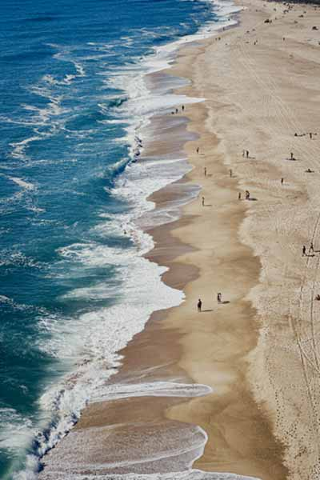

Lake Louise Ski Resort, or as my friends and I call it, ‘Louise’, will always hold a special place in my heart and memory. I was first introduced to skiing when I was 6 years old living in Ottawa. What started as an occasional day-trip activity gradually evolved into one of my most passionate pursuits so far in life. Skiing has shaped my life in irreversible ways, both positively and negatively. Louise is a place that needs to be experienced to be understood, and even then, one’s understanding goes only as deep as their passion to explore it. On an ideal day, standing on the summit enables you to gaze upon the vast, serene wilderness that the Rocky Mountains are internationally renowned for.
A sunny day at the lake
Nazare, Portugal
Nazaré is a small coastal town in Portugal, home to around 15,000 people. Thanks to prolific surfer Garrett McNamara, it has become internationally renowned as a premier big-wave surfing destination. The underwater Nazaré Canyon generates some of the tallest and most powerful waves in the world, attracting professional surfers eager to etch their names into surfing history. Each winter, Praia do Norte becomes the epicenter of extreme surfing, where athletes take on waves reaching up to 100 feet. Although I visited in the summertime, when the waves seemed rather average, I could still sense the raw natural power of this place. The Nazaré lighthouse, perched atop cliffs extending over the Atlantic Ocean, offers visitors a breathtaking panoramic view of the surrounding landscape.

A view from the lighthouse
Cliffs of Moher, Ireland
Standing atop the Cliffs of Moher is an otherworldly feeling. The sheer magnitude of this place is both intimidating and astonishing. My grandparents on my father’s side were both born and raised in Ireland, making them the perfect companions for a trip there. As soon as my brother and I were old enough to properly appreciate the opportunity, my dad and his parents planned a trip that would educate us on where our family comes from. The itinerary consisted of sites like Newgrange, the Rock of Cashel, Trinity College, the Guinness Storehouse, and the Cliffs of Moher. Seeing these places for the first time left me awestruck, though the feeling of standing atop these cliffs was an entirely different level of awe. The dramatic landscape has been sculpted over millions of years of coastal erosion, resulting in a rugged combination of deep caves and sheer ledges. At their tallest point, the cliffs reach an astonishing height of over 700 feet. Out of all the places that I have been lucky enough to visit, the Cliffs of Moher stand as the most memorable.